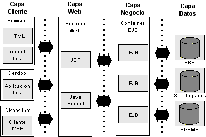

Índice
- Arquitectura J2EE
- Capa cliente
- Capa Web
- Capa de Negocio
- Capa de Datos
Arquitectura J2EE
J2EE es una especificación que define su arquitectura basandose en los conceptos de capas:
- Capas
- Containers
- Componentes
- Servicios
Las aplicaciones J2EE se dividen en 4 capas:
- Capa cliente
- Capa web
- Capa de negocio
- Capa de datos

Capa cliente
Esta capa es lo que hay en el ordenador del cliente, es la interfaz gráfica con la que interactúa el usuario. J2EE tiene soporte para varios tipos de clientes, como por ejemplo HTML, aplicaciones Java y applets.
Capa Web
- Se encuentra en el servidor web.
- Contiene la lógica de presentación que se utiliza para generar una respuesta para el cliente.
- Recibe los datos del usuario desde la "capa de cliente" y según los datos que haya recibido desde la capa de cliente genera una respuesta. Java tiene para la capa web Java Servlets y Java Server Pages (JSP) para crear los datos que se enviarán al cliente.
Capa de Negocio
- Se encuentra en el servidor de aplicaciones.
- Contiene la lógica de negocio.
- Los componentes de negocio interactúan con la capa de datos y la capa de negocio se implementa normalmente como EJB.
Capa de datos
En esta capa está el sistema de información de la empresa (EIS, Enterprise Information System), que incluyen las bases de datos, el sistema de procesamiento de datos, sistemas legados, y sistemas de planificación de recursos.
- Java Platform, Enterpise Edition (JEE).
- Es una plataforma de programación, parte de la plataforma Java.
- Permite desarrollar y ejecutar aplicaciones en Java.
- Permite utilizar una arquitectura de N capas distribuidas.
- Se apoya en componentes de software modulares ejecutándose en un servidor de aplicaciones.
- Java EE tiene varias especificaciones de API como:
- JDBC(Java Database Connectivity).
- RMI(Java Remote Method Invocation).
- email(JavaMail).
- JMS (Java Message Service).
- Servicios Web.
- XML.
- Java EE tiene especificaciones únicas para componentes Java EE como:
- Enterprise JavaBeans.
- Servlets.
- Portlets.
- JavaServer Pages (JSP)
Todo lo anterior nos permite desarrollar aplicaciones Empresariales portables entre plataformas y escalable. Otros beneficios es que el servidor de aplicaciones puede manejar:
- Transacciones.
- Seguridad.
- Escalabilidad.
- Concurrencia.
- Gestión de los componentes desplegados.
APIs generales estructura de control y manejo
Las APIs de Java EE incluyen varias tecnologías que extienden la funcionalidad de las APIs de base Java SE.
-
javax/ejb.* : es la API Enterprise JavaBeans que es un contenedor de objetos distribuidos para:
- Persistencia.
- RPCs.
- Control de concurrencia.
- Transacciones.
- Control de acceso apra objetos distribuidos.
-
javax/naming : definen la API de Java Naming and Directory Interface (JNDI).
-
javax/sql : definen la API de JDBC.
-
javax/transaction : definen la API JTA (Java Transaction API)
-
javax/xml : definen la API JAXP (Java API for XML Processing).
-
javax/jms : definen la API JMS (Java Message Service).
-
javax/persistence : provee las clases e interfaces necesarias para la interacción con los proveedores de persistencia, las clases administradas y los clientes de Java Persistence API (JPA).
Beneficios
Es posible empezar con cero coste. Nos podemos descargar la implementación de JavaEE de forma gratuita, y hay muchas herramientas de código abierto para extender la plataforma o simplificar el desarrollo. Algunos ejemplos de herramientas serían:
- NetBeans IDE: un IDE basado en Java.
- Eclipse: IDE basado en Java.
- Expand: plugin de Eclipse para el desarrollo rápido
- Apache Software Foundation Apache Maven: herramienta de construcción automática y gestión de dependencias.
- JUnit: framework de pruebas automatizadas.
- Apache Software Foundation Apache Tomcat: contenedor web de Servlets/JSP.
- Spring: framework para el desarrollo de aplicaciones Java EE.
- Struts: framework para el desarrollo de aplicaciones web EE confomre al patrón Modelo, Vista, Controlador.
- JavaServer Faces: framework para desarrollar aplicaciones web EE conforme al patrón Modelo Vista Controlador.
TODO: https://users.dcc.uchile.cl/~jbarrios/J2EE/node14.html
TODO: https://es.wikipedia.org/wiki/Java_EE
TODO: https://es.slideshare.net/yennylou/03-empaquetado-de-aplicaciones-jee